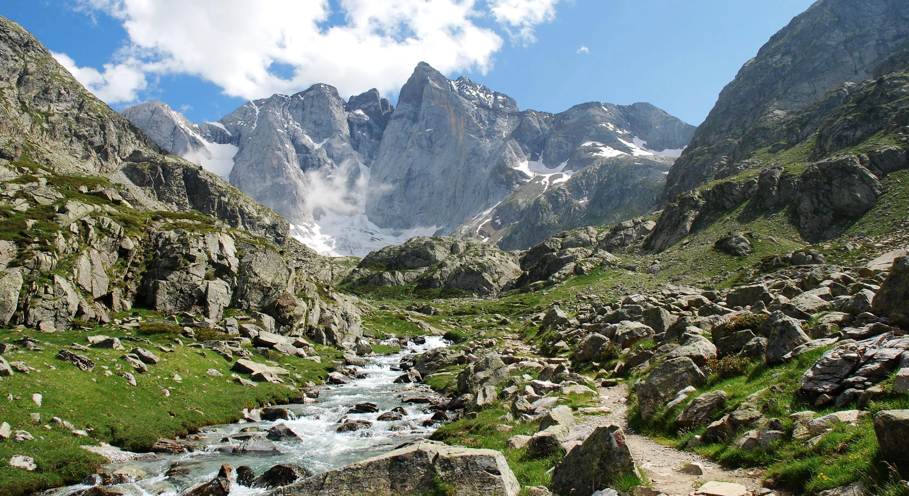

Martin Pecot
Bienvenue sur mon profil en ligne, apprenez en plus sur moi. Cette page a été codée grâce aux cours de Le Wagon.
Découvrez Le WagonÉtudes
J'étudie actuellement à l'ESSEC Business School. Il s'agit de la première étape de mon projet professionnel. J'ai pour ambition de pouvoir travailler plus tard dans l'industrie du sport. N'hésitez pas à consulter mon profil LinkedIn disponible en bas de page.

Sport
J'ai participé avec fierté aux championnats de France de 10 km et de semi-marathon, où j'ai pu repousser mes limites et relever de nouveaux défis. En 2023, j'ai franchi une étape importante en courant mon premier marathon à Paris. Cette expérience m'a apporté des valeurs qui me sont chères, telles que la persévérance, la discipline et la détermination.
Outdoor
Je suis un passionné de plein air. Rien ne me rend plus heureux que d'explorer la nature et de me plonger dans des aventures en plein air. Que ce soit en randonnée dans les montagnes, en camping au bord d'un lac ou en escalade sur des parois rocheuses, je suis constamment attiré par les merveilles de notre environnement naturel.
